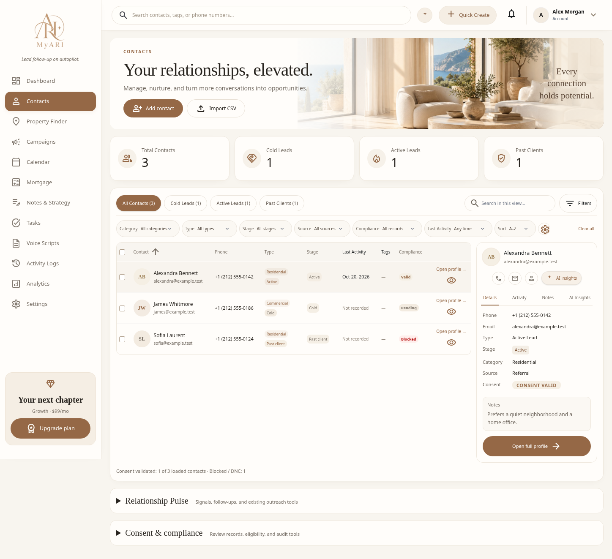
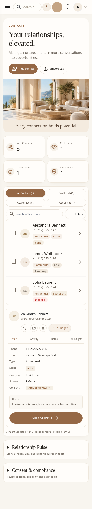

MyARI Contacts — premium workspace
Local review only; not pushed or deployed. Screenshots use isolated synthetic test fixtures, not subscriber records.
Changed files and verification notes · Interaction checks · Responsive checks
Reference width · 1448px

Desktop 1440px · Desktop 1920px · Tablet 768px
Mobile · 390px
